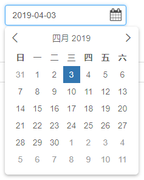
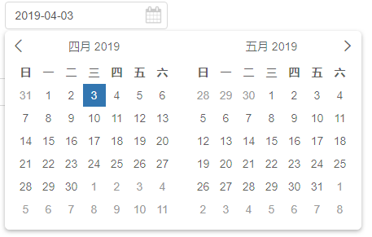
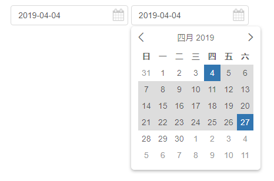
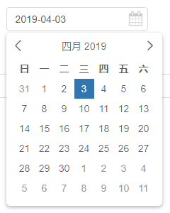

原文出处:本文由博客园博主越笨越爱提供。
原文连接:https://www.cnblogs.com/alax/p/10649295.html
原文连接:https://www.cnblogs.com/alax/p/10649295.html
一，前言
我是刚学Vue的菜鸟，在使用过程中需要用到日历控件，由于项目中原来是用jQuery写的，因此用了bootstarp的日历控件，但是配合Vue实在有点蛋疼，不够优雅……
于是网上搜了好久找到了Vue2-Calendar，不用说，挺好用的，但是同时也发现这个组件有些问题，有些功能挺不符合我们的要求，于是着手改了一版
二，改进的功能
在Vue2-Calendar v2.2.4 版基础上作了优化。
- 改进原控件无法切换语言的BUG，支持 lang='zh-CN'和'en'。
- 日历面板增加一个位置选项，允许让面板右对齐，只需要position=right即可。
- 原 :on-day-click 事件只有在 hasInput=false 时才生效，现改为一直有效，这样当用户点击日历面板上的日期后就可以触发该事件。
- clear=false时文本框右侧会显示一个日历图标，高仿bootstrap的日历组件，但clear=true时不显示
效果图

三，使用示例
1.常规使用，单日历

HTML代码：


1 <calendar v-model="value" show-date-only :disabled-days-of-week="disabled" :format="format" :clear-button="clear" :placeholder="placeholder" :lang="lang" :position="position" :on-day-click="dayClick">
2 </calendar>JS代码：
1 var app = new Vue({
2 el: "#app",
3 data: function() {
4 return {
5 disabled: [], //禁用的日期
6 value: new Date(), //值
7 format: "yyyy-MM-dd", //文本框中显示的日期格式
8 clear: false, //是否在文本框右侧显示清除按钮（X）
9 placeholder: "日期", //水印
10 position: "left", //日期面板位置，默认null和left 居左，right则靠右
11 lang: "" //语言，默认中文，可选值：zh-CN、en
12 };
13 },
14 methods: {
15 //鼠标点击日历面板上的日期时的事件，
16 //传递的两个参数均是同一个值，只是类型不同，随便用哪个看个人需要
17 //date 是 Date 类型
18 //dateStr 是 String 类型
19 dayClick: function(date, dateStr) {
20 console.log(date);
21 console.log(dateStr);
22 console.log(this.value);
23 }
24 },
25 components: {
26 calendar: Calendar
27 }
28 });
2.常规使用，双月日历
HTML代码：
1 <calendar v-model="value" show-date-only :disabled-days-of-week="disabled" :format="format" :clear-button="clear" :placeholder="placeholder" :lang="lang" :position="position" :on-day-click="dayClick" :pane="2">
2 </calendar>JS代码：
1 var app = new Vue({
2 el: "#app",
3 data: function() {
4 return {
5 disabled: [], //禁用的日期
6 value: new Date(), //值
7 format: "yyyy-MM-dd", //文本框中显示的日期格式
8 clear: false, //是否在文本框右侧显示清除按钮（X）
9 placeholder: "日期", //水印
10 position: "left", //日期面板位置，默认null和left 居左，right则靠右
11 lang: "" //语言，默认中文，可选值：zh-CN、en
12 };
13 },
14 methods: {
15 //鼠标点击日历面板上的日期时的事件，
16 //传递的两个参数均是同一个值，只是类型不同，随便用哪个看个人需要
17 //date 是 Date 类型
18 //dateStr 是 String 类型
19 dayClick: function(date, dateStr) {
20 console.log(date);
21 console.log(dateStr);
22 console.log(this.value);
23 }
24 },
25 components: {
26 calendar: Calendar
27 }
28 });3.双日历联动，通常用在开始和结束时间的选择上，结束时间不能早于开始时间
说明：当选择了开始时间后，结束时间选择时会显示哪些日期可选，并且显示已经选择的开始时间
HTML代码：
1 <calendar v-model="value" show-date-only :disabled-days-of-week="disabled" :format="format" :clear-button="clear" :placeholder="'起始时间'" :lang="lang" :position="position" :on-day-click="dayClick" :pane="1" :range-bus="getBus" :range-status="1"></calendar>
2 <calendar v-model="value2" show-date-only :disabled-days-of-week="disabled" :format="format" :clear-button="clear" :placeholder="'结束时间'" :lang="lang" :position="position" :on-day-click="dayClick" :pane="1" :range-bus="getBus" :range-status="2"></calendar>JS代码：
1 var app2 = new Vue({
2 el: "#app2",
3 data: function() {
4 return {
5 disabled: [],
6 value: new Date(),
7 value2: new Date(),
8 format: "yyyy-MM-dd",
9 clear: false,
10 placeholder: "Start Date",
11 position: "left",
12 lang: "",
13 bus: new Vue()
14 };
15 },
16 methods: {
17 dayClick: function(date, dateStr) {
18 console.log('value=' + this.value);
19 console.log('value2=' + this.value2);
20 },
21 getBus: function() {
22 return this.bus;
23 }
24 },
25 components: {
26 calendar: Calendar
27 }
28 });四，参数说明（翻译的官方文档）
安装（需要node支持）
$ npm install vue2-slot-calendar
导入模块
// js file
import 'vue2-slot-calendar/lib/calendar.min.css';
import calendar from 'vue2-slot-calendar/lib/calendar';
// vue file
// in ES6 modules
import Calendar from 'vue2-slot-calendar';
// in CommonJS
const Calendar = require('vue2-slot-calendar');
// in Global variable
const VueCalendar = Calendar;
直接引用编译好的js文件（推荐）
<link rel="stylesheet" href="/lib/calendar.min.css" > <script src="/lib/calendar.min.js"></script>
多语言支持
系统提供window.VueCalendarLang 勾子函数来让用户自定义语言，
window.VueCalendarLang=function(lang){
return {}; //对象必须是下面JSON格式
};
上面勾子函数返回的必须是下面格式的JSON对象。
下面的脚本在 /src/lang/zh-CN.js 中有
{
daysOfWeek: ["日", "一", "二", "三", "四", "五", "六"],
limit: "超过限制 (最多{{limit}}项)",
loading: "加载中...",
minLength: "最小长度",
months: [
"一月",
"二月",
"三月",
"四月",
"五月",
"六月",
"七月",
"八月",
"九月",
"十月",
"十一",
"十二"
],
notSelected: "未选择",
required: "必填项",
search: "查找"
}
构建步骤
# 安装依赖 npm install # 运行开发服务器 localhost:4000 npm run dev # 编译（压缩JS和CSS等） npm run build # 单元测试 npm run unit # 运行所有测试 npm test
参数和事件
| Name | Type | Default | Description |
|---|---|---|---|
| value | String |
'' | 组件输入输出的值，即 v-model 的值 |
| width | String |
'200px' | input文本框的宽度 |
| format | String |
yyyy-MM-dd |
日期格式,可用值： d, dd, M, MM, MMM, MMMM, yyyy. |
| disabled-days-of-week | Array |
每周有哪些天禁用，可用值0-6，多个值则用逗号隔开 | |
| clear-button | Bollean |
false | 是否显示清除按钮，显示清除按钮时右侧的日历图标不显示，不显示清除按钮时则显示日历图标 |
| placeholder | String |
文本框中显示的水印 | |
| hasInput | Boolean |
true | 是否显示文本框 |
| pane | Number |
1 | 日历面板数量，默认1，双月日历设为2即可，目前仅支持1和2 |
| borderWidth | Number |
2 | 日历面板边框线宽度 |
| onDayClick | Function |
点击日期时的事件，已改为不受hasInput值的限制，总是触发 | |
| specialDays | Object |
特殊日期 | |
| changePane | Function |
切换日历面板时的事件, 暂时还没研究这个，大多数情况下用不到，请参考 /src/modules/Docs.vue |
|
| rangeBus | Function |
暂时不明白啥意思，请总是返回一个 new Vue() 就对了 | |
| rangeStatus | Number |
0 | 日期范围状态，默认0表示不使用日期范围，1表示双日历联动的起始日期，2表示双日历联动的结束日期 |
| onDrawDate | Function |
绘制日期时的事件，可以让用户自定义日历样式 | |
| showDateOnly | Boolean |
false | 是否只显示日历面板 |
| transfer | Boolean |
false | 是否将日历面板添加到 document.body中 |
| elementId | String |
日历ID | |
| firstDayOfWeek | Number |
0 | 每周第1天，0表示星期天，1表示星期一，其它依次类推 |
组件的所有属性值
props: {
value: {
type: [String, Date]
},
format: {
default: 'yyyy-MM-dd'
},
firstDayOfWeek: {
// sunday
default: 0
},
disabledDaysOfWeek: {
type: Array,
default () {
return []
}
},
width: {
type: String,
default: '200px'
},
clearButton: {
type: Boolean,
default: false
},
inputClasses: {
type: String,
default: ''
},
lang: {
type: String,
default: navigator.language
},
placeholder: {
type: String
},
hasInput: {
type: Boolean,
default: true
},
pane: {
type: Number,
default: 1
},
borderWidth: {
type: Number,
default: 2
},
onDayClick: {
type: Function,
default () {}
},
changePane: {
type: Function,
default () {}
},
specialDays: {
type: Object,
default () {
return {}
}
},
rangeBus: {
type: Function,
default () {
// return new Vue()
}
},
rangeStatus: {
type: Number,
default: 0
},
onDrawDate: {
type: Function,
default () {}
},
maxDate: {
type: String
},
minDate: {
type: String
},
showDateOnly: {
type: Boolean,
default: false
},
transfer: {
type: Boolean,
default: false
},
elementId: [String]
}
五，源码
以下是我改过后的源码：
https://github.com/alaxgit/Vue2-Calendar
六，直接引用JS
如果你喜欢直接引用JS和CSS，不喜欢用webpack编译啥的，可以直接下载编译好的文件：
https://github.com/alaxgit/Vue2-Calendar/blob/master/lib/calendar.min.js
https://github.com/alaxgit/Vue2-Calendar/blob/master/lib/calendar.min.css